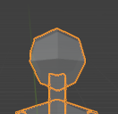
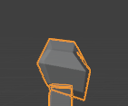
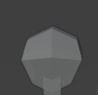
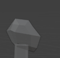

For making the head, the method is the same as the torso, "First I added a cube, and then I matched our template, which was the side view and front view of the character's head, and then I deleted half of it and then mirrored it to make the base of the head."
   Above are the pictures of the character's head, the main problem with the head is on the side. Viewed from the side, the shape of the entire head is weird (because the head is only connected to the neck, and the area is not large, so the head can be improved directly!) I think I need to add one or two loop cuts to the head , to make more face parts, and then make the side look more like a "human head"
It looks great from the front, but looks weird from the side.
needs improve the side face of the character.
I improve the side face of the character.